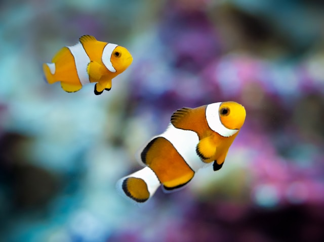
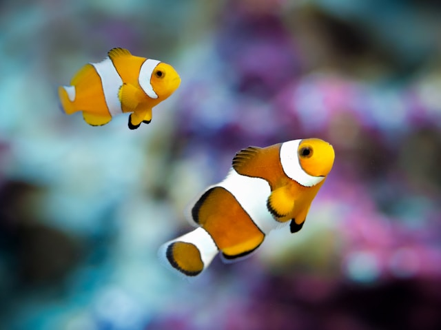

Fish represent a broad class of aquatic animals that can live in fresh or saltwater, depending on the species. Bringing fish into your home can be an exciting hobby, especially if you intend to breed them, and the presence of a fish tank in your home can induce feelings of peace and tranquility. Whether you are bringing your fish home for the first time or maintaining your aquarium, it is important to test your water once per week to ensure it is free from toxins that can harm your fish.
Freshwater Fish Care Tips
There are several freshwater fish to choose from when setting up your aquarium, but it is best to consult with a “Pexpert” to ensure your fish will get along! No matter the species, ensure your fish are suited for a freshwater environment by investing in a water testing kit. Follow these general water chemistry guidelines to ensure your fish will adapt well to your aquarium and avoid ingesting toxins that can harm or kill your fish:
- pH Level: 6.8‒7.6 (7.0 is considered neutral)
- Ammonia: any level above zero is harmful to fish
- Nitrates: 5 to 10 ppm
- Nitrites: less than 0.5 ppm
Saltwater Fish Care Tips
Saltwater fish also offer several options when it comes to choosing among species for your aquarium. As with freshwater fish, consult with a “Pexpert” to ensure your fish will get along are suited for a saltwater environment. Following these general guidelines to avoid dangerous water conditions and ensure the appropriate salinity level for your fishies:
- Salinity: 1.020‒1.028 sg
- pH Level: 7.6‒8.4 (7.0 is considered neutral)
- Ammonia: any level above 0.1 ppm requires attention
- Nitrates: 10 to 40 ppm
- Nitrites: less than 0.2 ppm
 

For more information on making your tap water safe for your fish, please visit:
Have questions? Request a consultation with our Pexperts today!
Request Consultation